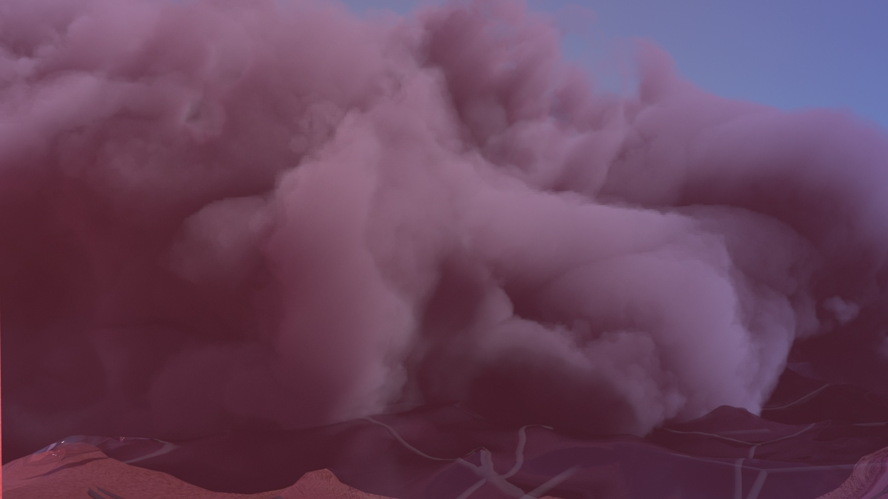
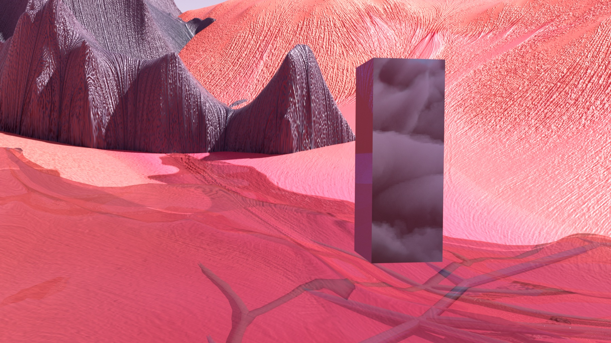

VIRTUAL GAP YEAR
Virtual Gap Year is a short film by Pitch Studios and IAM exploring the post-technological futures of the internet. Entirely computer generated, the short is the first collaboration between the Melbourne-based creative studio and IAM, an alternative think-tank, consultancy and community investigating the evolution of digital culture and its impact on our populations.
Written by Pitch Studios. Contributing artists: Twomuch Studio, Polina Zinziver, SmiskoAckerman, Lorna Pittaway. Sound design: Jennifer Loveless. Editor: Marina Maekawa.
The video shows only Polina Zinziver’s part of the film.


